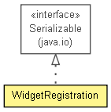

context.arch.logging.hibernate
Class WidgetRegistration
java.lang.Object
 context.arch.logging.hibernate.WidgetRegistration
context.arch.logging.hibernate.WidgetRegistration
- All Implemented Interfaces:
- java.io.Serializable
@Entity
public class WidgetRegistration
- extends java.lang.Object
- implements java.io.Serializable

- See Also:
- Serialized Form
|
Field Summary |
static int |
CHILDREN_COUNT
Used to prevent use of a magic number |
| Methods inherited from class java.lang.Object |
clone, finalize, getClass, notify, notifyAll, wait, wait, wait |
CHILDREN_COUNT
public static final int CHILDREN_COUNT
- Used to prevent use of a magic number
- See Also:
- Constant Field Values
WidgetRegistration
public WidgetRegistration(java.lang.String widgetid,
java.util.Date registrationtime,
java.util.Set<WRCallback> WRCallbacks,
java.util.Set<WRAttribute> WRAttributes,
java.util.Set<WRService> WRServices)
- full constructor
WidgetRegistration
public WidgetRegistration()
- default constructor
getWidgetregistrationid
public java.lang.Integer getWidgetregistrationid()
setWidgetregistrationid
public void setWidgetregistrationid(java.lang.Integer widgetregistrationid)
getWidgetid
public java.lang.String getWidgetid()
setWidgetid
public void setWidgetid(java.lang.String widgetid)
getRegistrationtime
public java.util.Date getRegistrationtime()
setRegistrationtime
public void setRegistrationtime(java.util.Date registrationtime)
getWRCallbacks
public java.util.Set<WRCallback> getWRCallbacks()
setWRCallbacks
public void setWRCallbacks(java.util.Set<WRCallback> WRCallbacks)
getWRAttributes
public java.util.Set<WRAttribute> getWRAttributes()
setWRAttributes
public void setWRAttributes(java.util.Set<WRAttribute> WRAttributes)
getWRServices
public java.util.Set<WRService> getWRServices()
setWRServices
public void setWRServices(java.util.Set<WRService> WRServices)
toString
public java.lang.String toString()
- Overrides:
toString in class java.lang.Object
equals
public boolean equals(java.lang.Object other)
- Overrides:
equals in class java.lang.Object
hashCode
public int hashCode()
- Overrides:
hashCode in class java.lang.Object